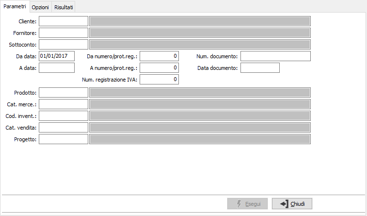
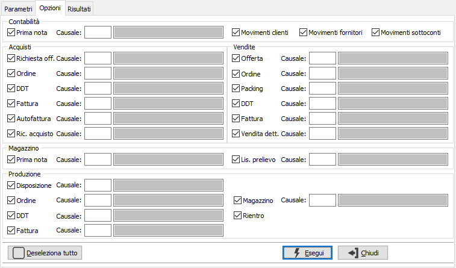
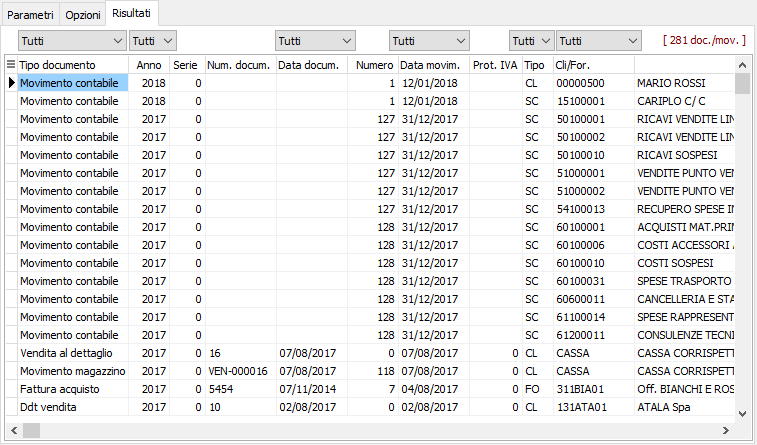

Ricerca documenti
Il programma consente di ricercare tramite vari criteri di selezione tutte le tipologie di documento.
Il programma si articola su tre finestre video. La prima, Parametri, consente la definizione dei parametri di ricerca.

La prima sezione contiene parametri generici comuni a più documenti quali i codici cliente, fornitore o sottoconto, prodotto, categoria merce, codice inventario e categoria di vendita dei prodotti e i limiti di data documento, di numero documento o di registrazione; se attiva la gestione progetti sarà possibile specificare il codice di un progetto.

La seconda sezione contiene i parametri di selezione dei movimenti contabili e dei documenti attivi e passivi; per ogni tipologia di movimento/documento è possibile specificare una singola causale, per la prima nota contabile è anche possibile specificare se ricercare i movimenti relativi a clienti, fornitori o sottoconti.
In base ai parametri impostati nella prima sezione vengono automaticamente selezionati i relativi movimenti, ad esempio impostando un cliente nei paramenti di selezione vengono selezionati i movimenti/documenti su cui è presente il cliente (la prima nota contabile e di magazzino, i documenti del ciclo attivo e le liste di prelievo).
Tramite il bottone , attivo se tutte le scelte sono selezionate, è possibile deselezionare tutte le scelte.
Tramite il bottone , attivo se tutte le scelte non sono selezionate, è possibile selezionare tutte le scelte deselezionate.
Confermando tramite pressione del bottone Esegui, viene avviata la selezione e richiamata la finestra video Risultati:

Nei risultati è possibile impostare ulteriori filtri sul tipo documento, sull'anno, sulla data documento e movimento, sulla tipologia del conto e sul cliente/fornitore, tramite gli appositi bottoni posti sulle varie colonne.
Cliccando sulle varie intestazioni delle colonne è possibile effettuare l'ordinamento per la colonna selezionata.
Tramite il tasto funzione F11, il doppio click o il tasto destro del mouse, è possibile accedere al movimento su cui si è posizionati.